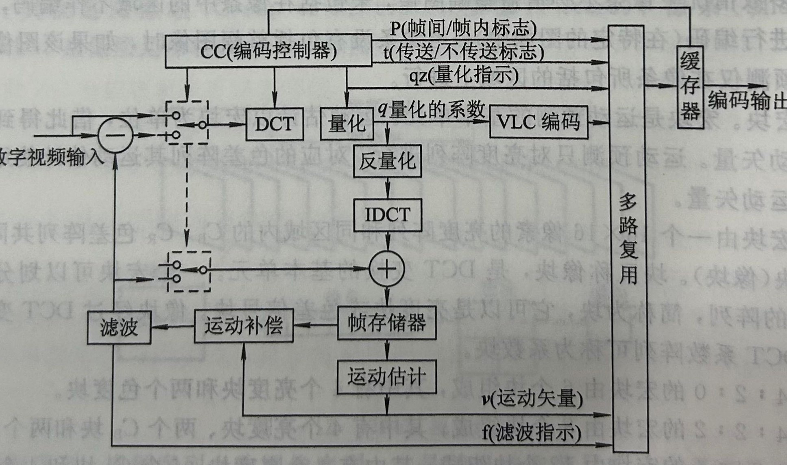

MPEG-2原理框图以及简述编码过程。
MPEG-2的原理框图如下所示：

MPEG -2 编码器框图如图所示，两个双向选择开关由编码控制都CC控制，当它们同时接到上边时，编码器工作在帧内编码模式，输人信号直接进行DCT 麥换，经过量化处理后丹进行变字长编码 VLC，得到最后的编码输出。当双向开关同时接到下方时，编的希利用仔储在顺存储器FM 中的上一帧图像进行帧间预测，将输人信号与预测信号相减后，对顶测识差进行DCT 变换，经过量化处理后再进行变字长编码VLC，得到敢后的编码输出。此时，编码器工作在帧间编码模式，是一个帧问预测与 DCT 组成的混合编的器。还有还动估计和补偿处理 MEP，可改善帧间预测的效果。为丁使解码器能正确地解的，編码器的工作状态必须即时通知解码端，为此每个编码模式和控制参数等辅助信息也要进行编码传输。
QPSK调制过程方框图及简述其过程。
下面是QPSK调制的方框图，它展示了QPSK调制的过程：

上图是 QPSK 调制器的原理框图，码率为R的数宇序列$S(t)$经分裂器分裂为码率为R/2的I、Q信号，再由I、Q信号生成幅度为一A~A 的双极性不归零序列 $Re（t）$、$Im（t）$，$Re(t)$利$Im(t)$分别对相互正交的两个载波$cosωct$ 和 $cos（ωct+\frac π2）= -sinωct$进行ASK(幅度键控)调制，然后相加得到已调信号 $S_{QPSK} (t)$，即$S_{QPSK} (t) = Re(t) cosω_ct - Im(t) sinω_ct$
条件系统方框图并简述DVB条件接收系统的安全性。
下面是DVB条件系统框图
CA 系统的关键是安全性。在全数字 CA 系统中，一般采用三级密钥体制。CA 系统的加扰对象是数据流，要求实时加扰，要采用能满足实时性要求的流密码 (StreamCipher)算法
正交幅度调制QAM的调制过程的方框图级简述其过程。
下面是QAM调制的方框图，它展示了QAM调制的过程：

图5-1是MQAM正交振幅调制方框图。调制信号S由分裂器(串/并变换)分成I /Q两路信号，再经2-m 电平变换器以2电平信号变成m电平信号$X(t )$、$Y(t)$，用$X(t)$、$Y(t)$对正交的两个载波$cosω_ct$和$sinω_ct$ 进行调幅，再相加得到已调信号 MQAM。